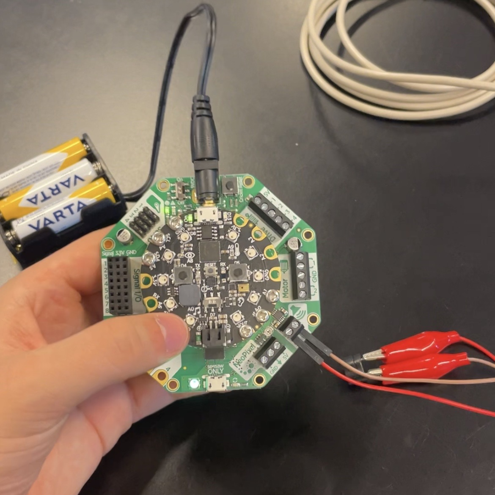
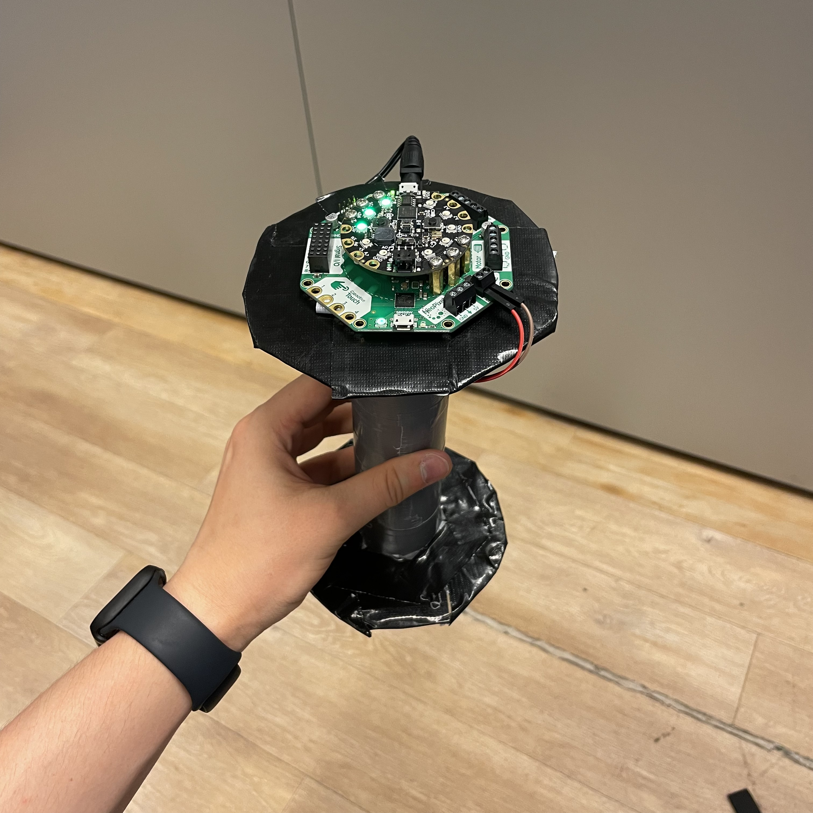
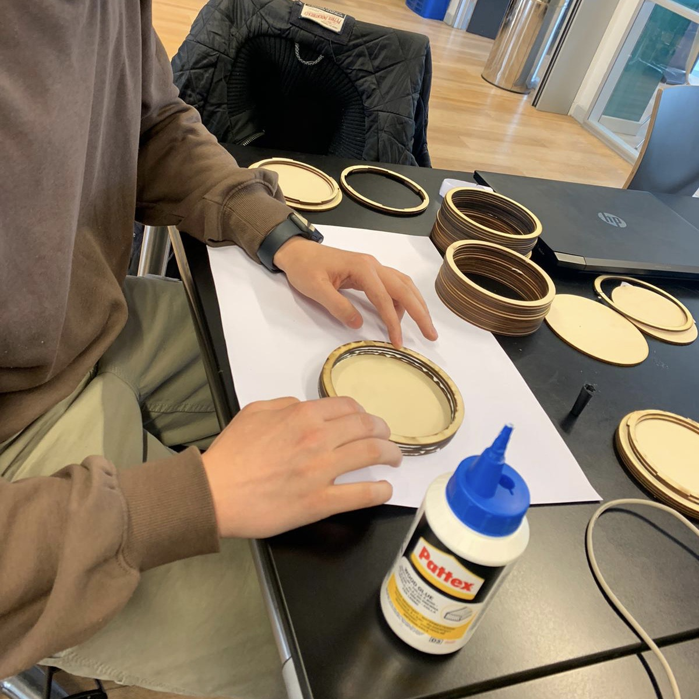
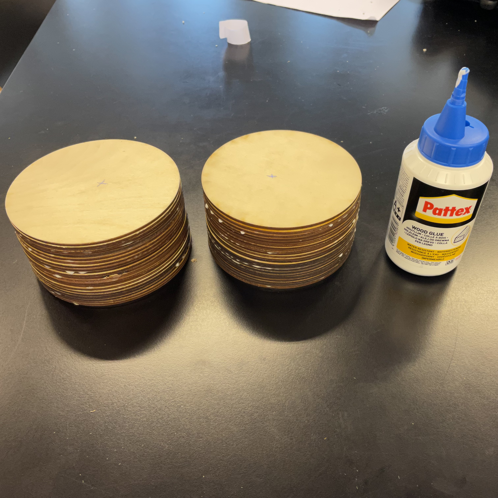
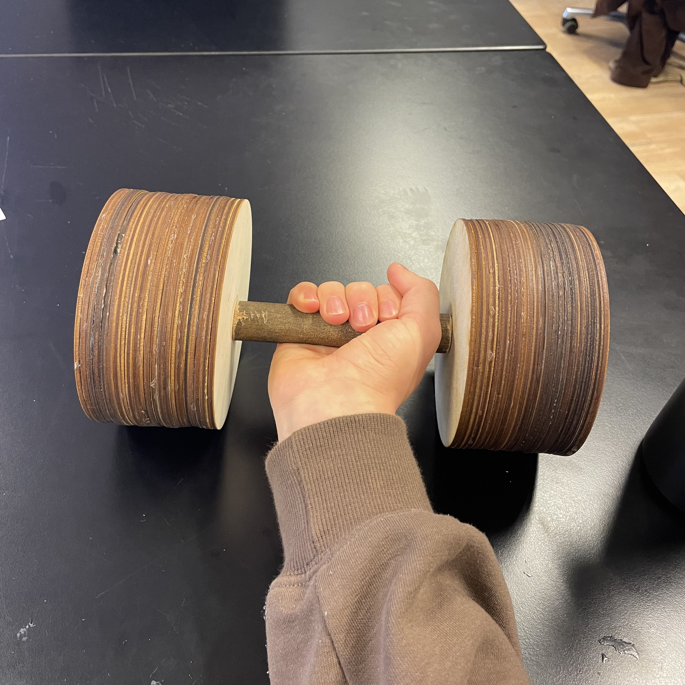
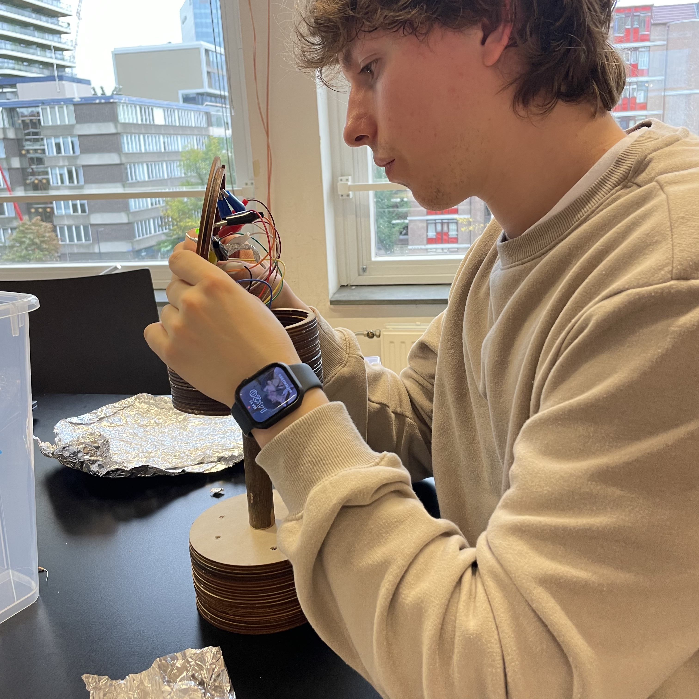
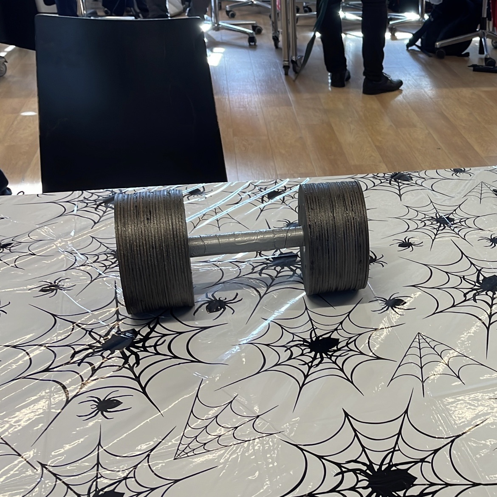
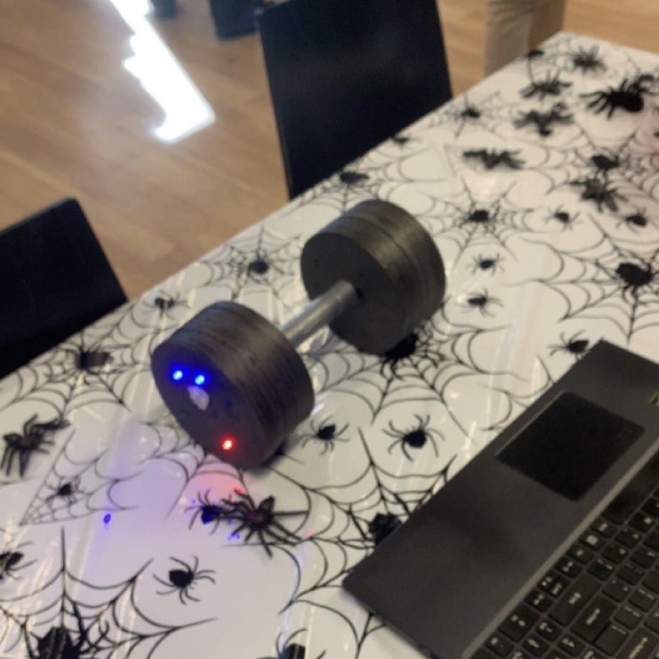
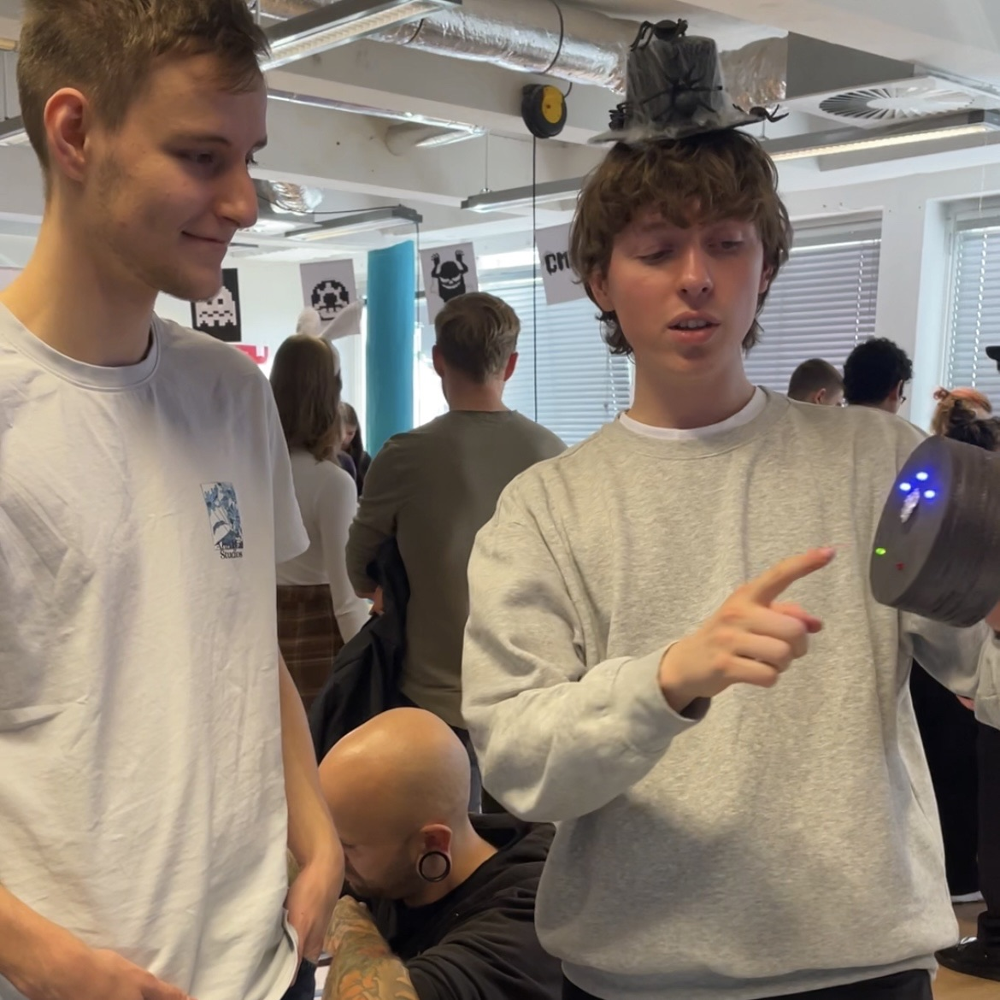

Schoolprojecten
CLE 1
De opdracht in de eerste periode was om een robot te maken om een klasgenoot te helpen in het dagelijks leven.
Deze dumbell dient als accessoire voor thuis en heeft 2 functies:
- Het ene gewicht houdt bij hoe vaak je naar de sportschool gaat in de week, elke keer als je een bezoek hebt gebracht aan de sportschool kun je deze robot 'liften' en dan gaat er een blauw lampje branden. Het doel van mijn klasgenoot is 3 keer per week sporten, als de timer afloopt en er branden 3 lampjes dan gaat er een groen lampje branden en klinkt er een vrolijk melodietje. Branden er minder dan 3 lampjes dan gaat er een rood lampje branden en klinkt er een verdrietig melodietje.
- Het andere gewicht is een spelletje dat erg lijkt op Guitar Hero. Er zitten 3 lampjes op met daar tegenover een touch knop, als een lampje brand kun je punten verdienen door op het bijbehorende knopje te drukken.
Hieronder is het proces van de robot te zien:








